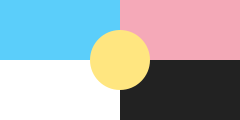

Serve this directory on 127.0.0.1 and open this page in Carboxyl 0.2.0.
Waiting for local submission
Vietnamese composed: Tiếng Việt — decomposed: Tiếng Việt
Combining sequence: ạ́̂̃̆̄̈̊̋̌̇
CJK: 中文 日本語 한국어 — Thai: ภาษาไทย
Variation selectors: ♥︎ ♥️ — skin tones: 👍🏽 — flags: 🇻🇳 🇯🇵
Joined and adjacent emoji: 👩🏽💻 👨👩👧👦 🦊🐱🐶
Resize and overlap another window across the wide glyphs.

Check colors, scrolling, mouse links and history; no external page is required.